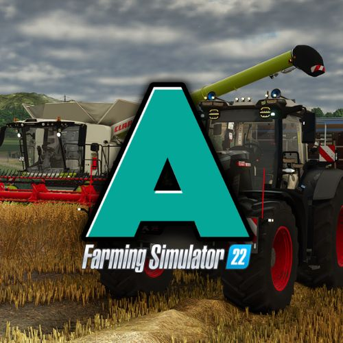
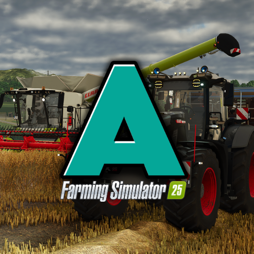

Serveur AgriFarm fs22
Hors LigneServeur AgriFarm fs22
👥 Joueurs
0 / 16
📦 Mods
2
🗺️ Map
haut Beleron
⚙️ Style
Chill

Serveur AgriFarm fs25
HORS LIGNEServeur officiel fs25 d'AgriFarm
👥 Joueurs
0 / 16
📦 Mods
60
🗺️ Map
...
⚙️ Style
Chill